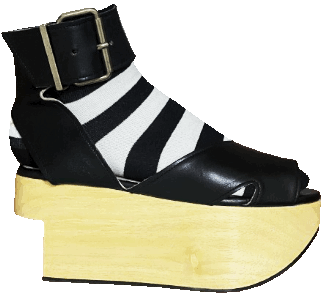
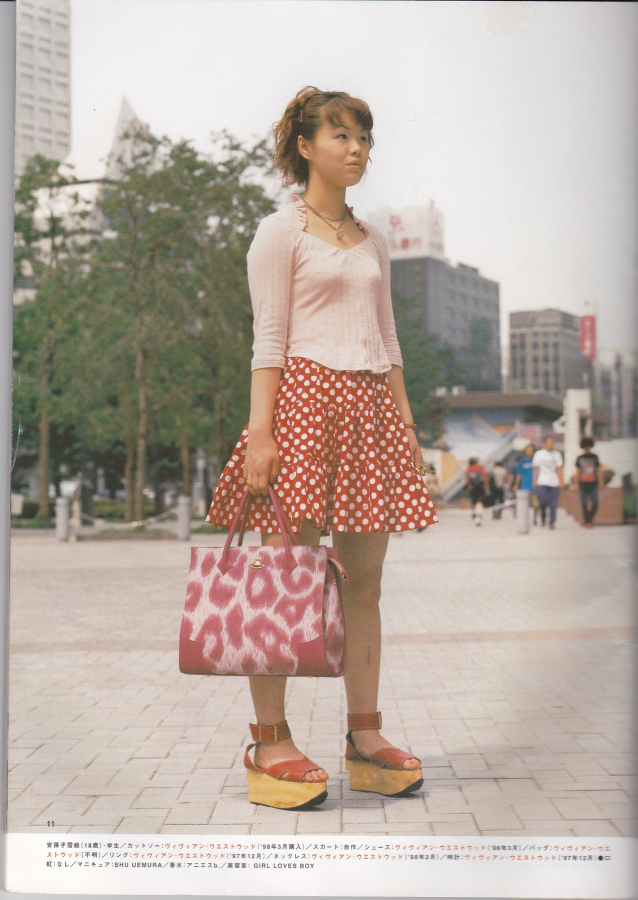
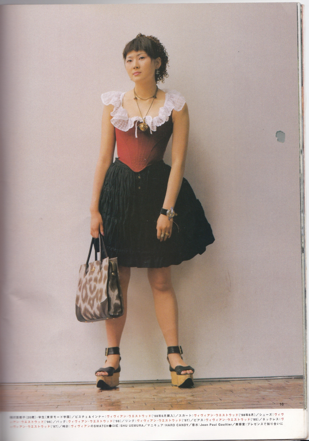
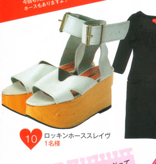

Rocking Horse Pagan Sandals
2025.01.05

I decided the pagan sandal was my must-have, a reorchestrated piece after the original rhs due to its brass buckle (given I wear a lot of metal). The base is made from real ayous wood and full-grain animal leather, which ages beautifully the more you wear it. It's sold at the World's End boutique in London.
Out of the box the wooden wedge is pretty light-colored. You can usually achieve the butterscotch yellow seen in older pairs through treating the platforms with wax or varnish.
There aren't words for how grateful I am to finally be able to put this legendary work of art to use for what I hope to be decades while I'm doing my own thing.


